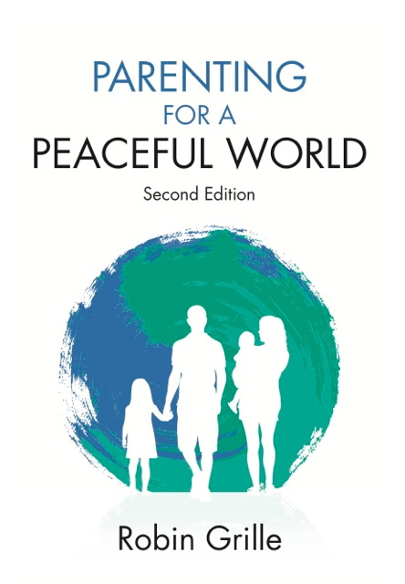

Emotional
Intelligence
~ Why EI matters
~ Test your EI
Emotional Intelligence and the Emotional Intelligence Test
‘Emotional intelligence’ includes such things
as:
1. Identifying your feelings and needs, through body-awareness.
2. The ability to read others’ feelings, and to listen to others
with empathy.
3. Knowing how to express your feelings with words and/or body-language.
4. Choosing when to contain (not repress) emotion, and when to communicate
emotion appropriately.
5. The ability to process and let go of emotion when necessary.
6. The willingness to give ourselves time to feel, and to enjoy the depths
of our ‘selves’ through feeling.
7. The ability to lead wisely or follow with grace.
8. The ability to honour our own limits, as well as to celebrate our talents.
9. The ability to give and receive love.
A rich and colourful tapestry of emotion gives meaning to our lives, and depth to our experiences. Even when we are not consciously aware of emotion, it motivates our behaviour, and drives our every gesture and choice.
Many of us have learned early in our lives to hide or ignore our feelings, and that is why relationships can become stunted and dull. Relationships cannot be truly intimate, nor can they grow, without a sharing of our emotional inner worlds. Try the emotional intelligence test to gain insight into areas of your emotional development you might like to expand or develop. Counselling can help us to develop our emotional intelligence, and thus enrich our relationships and achieve our life’s goals.
When it comes to emotional intelligence, every last one of us is learning, evolving and developing, well into adulthood.
Counselling and psychotherapy are two of many means available to heal our emotional wounds, further develop our emotional intelligence, and revitalize our relationships.
Try the emotional
intelligence test. This questionnaire is taken from my book: ‘Parenting
for a Peaceful World’, which is an in-depth look at ‘emotional
intelligence’, how it develops in early childhood, and how important
it is for healthy relationships and happy societies.
The questionaire is in pdf format which you
can print out straight from the web site. If you have tried the link and
cannot view the page, you are probably missing the program "Acrobat
Reader" which is freely available through this link:
Download Acrobat Reader.
Emotional Intelligence :: Publications :: Counselling Services :: About Robin Grille :: Contact :: Links :: Home
Our Emotional Health web site built by Slam; best viewed at minimum 800x600 resolution. Copyright 2005